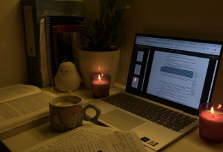

Rotina & Organização
Planeje seu dia para mais produtividade.
A rotina é essencial para manter a disciplina e alcançar objetivos.
Organize suas tarefas diárias, semanais e mensais para otimizar seu tempo e reduzir o estresse.
DISCIPLINA & LAR
'Cause I'm gonna make this place your home” — Phillip Phillips
Mas afinal, o que torna uma casa um lar?
Uma casa se torna um lar quando deixa de ser apenas um espaço sob um teto e passa a ser um lugar onde é possível ser vulnerável.
É somente por meio da disciplina que se alcança essa dádiva, pois ela é o alicerce que assegura o bem-estar dos indivíduos.
É através da disciplina e da organização em nossas relações que podemos construir um verdadeiro lar, um lar de pessoas.
HORÁRIO ESCOLAR
A rotina escolar pode ser sua maior aliada no aprendizado.
Aproveitar e cumprir as horas escolares são as principais ferramentas para a intensificação daquele que estuda. O respeito aos horários de sua instituição é um dever seu como aluno, o respeito com o seu tempo em sala é autopreservação.
Quem chega cedo, nunca se atrasa. Desenvolva o máximo que puder dentro da instituição.
Aproveite o tempo em sala, desenvolva as atividades no tempo destinado;
DESENVOLVA-SE
ORGANIZAÇÃO PESSOAL
-
Espaço Pessoal
Tenha consciência do seu tempo.
Use calendários, planners, agendas e aplicativos digitais de organização e sempre verifique possíveis alterações.
-
Cronograma
Organize o espaço que você estuda, trabalha e vive.
Método KonMari: foca em manter apenas o que “traz alegria” e descartar o resto.
Organização por Zonas: Divide o ambiente em áreas de função, facilitando a organização do mesmo
-
Uso de Organizadores Modulares: Caixas, divisórias e gaveteiros para otimizar espaço e manter categorias separadas.
Cada pessoa encontra o próprio jeito de se organizar. Separamos aqui algumas ideias para tornar seu cotidiano mais organizado
ESPAÇO DE ESTUDO IDEAL
“Um quarto bagunçado reflete uma mente bagunçada”
-

UM LUGAR HARMONICO
-
SILENCIOSO
-
ORGANIZADO
Organize seu espaço de estudo de maneira funcional, evitando distrações e criando o espaço perfeito para o aprendizado.
aprendizado
Equilibrio
Tudo que é demais enjoa. A produtividade também inclui momentos de pausa.
Ser disciplinado e organizado não significa ocupar todo o tempo livre, mas saber gerir pausas e começos com constância e bem-estar